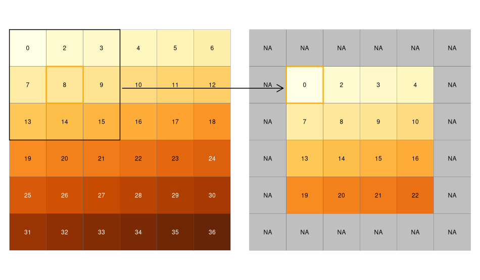

As we saw earlier, we are going to use another package to import raster data sets. The rast() function from the terra package is what we need. It doesn’t matter if our raster is continuous, discrete, or contains several bands, the rast() function will create the correct terra object. Calling the object will display some basic information about the data set. However don’t forget that it’s only a pointer to the data set, the full raster will not be imported into memory.
The digital elevation model is an extract of the DHM25 data set provided by Swisstopo, the orthophoto is an extract of the SWISSIMAGE data set also provided by Swisstopo.
Note that the orthophoto was plotted in a different way (no axes, no legend). The terra package automatically detected that the raster had 3 bands and made the assumption that the bands corresponded to red, green and blue intensity values. If this assumption is not correct, you can use the plotRGB() function and specify the RGB bands manually to get the desired plot.
Similarly we can import a raster containing discrete values, such as a landcover/landuse data set. The following one is an extract from the Swiss Land Use Statistics, provided by the Federal Statistical Office. Note that the CRS is not defined, this will happen more often with raster data found in the wild than with vector data. Fortunately we know which CRS was used and we can add this information to the data set. Moreover, terra is not recognizing automatically that we’re processing a discrete raster. That’s why we need to use the as.factor() function.
landcover <-rast("data/landcover.tif")landcover
class : SpatRaster
dimensions : 151, 210, 1 (nrow, ncol, nlyr)
resolution : 100, 100 (x, y)
extent : 2644000, 2665000, 1212900, 1228000 (xmin, xmax, ymin, ymax)
coord. ref. :
source : landcover.tif
name : X
min value : 1
max value : 26
If you got a warning when setting the CRS of the landcover raster, please read the next lines carefully!
The terra package currently has a bug causing some troubles finding the PROJ library if you manually installed another PROJ instance on Windows (e.g. this is happening when you install PostGIS). In this case you’ll often see warnings referring to PROJ: proj_create_from_database and all CRS operations will fail. To solve this problem, run the following code before loading terra (do this ONLY if you get these warnings, otherwise this may cause other problems):
Sys.setenv(PROJ_LIB ="")
If a raster data set is stored online, you can also directly use it without needing to download the full data set. This works especially well with rasters stored as Cloud Optimized GeoTiff (COG) files. A COG file is a regular GeoTiff file, aimed at being hosted on a HTTP file server, with an internal organization that enables more efficient workflows on the cloud. To read such rasters, you’ll need to the vsi = TRUE argument inside the rast() function.
url_swissimage <-"https://data.geo.admin.ch/ch.swisstopo.swissimage-dop10/swissimage-dop10_2021_2666-1211/swissimage-dop10_2021_2666-1211_0.1_2056.tif"ortho_web <-rast(url_swissimage, vsi =TRUE)plot(ortho_web)
Rasters are nice objects to work with but it’s sometimes nice to have more familiar R objects. You can easily convert SpatRaster objects to data frames containing the geographic coordinates of all pixels and the related pixel values.
x y dem
1 2644000 1228000 544
2 2644025 1228000 544
3 2644050 1228000 543
4 2644075 1228000 544
5 2644100 1228000 545
6 2644125 1228000 546
write.csv(elev_df, "export/dem.csv")
Similarly, if you have a data frame containing geographic coordinates located on a regular grid and associated values, you can easily convert it to a terra object with the help of the rast() function, by adding the argument type = "xyz". This is often useful if you want to plot the predictions of a statistical model on a map, for example the distribution of a species. Here we add a new column to some data frame filled with random values and we convert it to a 2-band raster.
elev_df$rand <-rnorm(nrow(elev_df))elev2 <-rast(elev_df, type ="xyz")elev2
Exporting a raster data set is really easy thanks to the writeRaster() function. The format will be automatically recognized based on the file name extension. As we saw in the introduction, the GeoTiff format is almost always the format we should use.
Remember that the first raster was a single band raster and the second one had two bands. If you want to only export a single band, you can subset the raster data set using [[]], either using the band number or name.
In the GIS world, functions acting on the whole raster (using all pixels) to produce some output are called global functions. They are mostly used to produce some descriptive statistics on the data set. It is therefore not so surprising that terra provides such a function. If you prefer plots, the hist() and boxplot() functions have also been extended to support SpatRaster objects.
global(elev, fun ="max")
max
dem 930
hist(elev)
boxplot(elev)
Warning: [boxplot] taking a sample of 1e+05 cells
You can define you own function when using the global() function. However they will be much slower than the standard functions provided by terra, or may even fail.
For discrete rasters, you can easily get the frequency distribution of all the available categories.
If you need to spatially subset a raster, you can either use another raster defining the zone you want to extract, or a polygon enclosing the area. First we’ll have a look at the former. We first import our raster mask.
rmask <-rast("data/sempach_raster.tif")plot(rmask, col ="blue")
Don’t forget that regular raster data sets are always rectangular. The raster mask we’re now using is the municipality of Sempach. We see its shape, but the data set is still a rectangle. All the other pixels in the raster extent are NAs (you can quickly check it using the values() function).
First we need to use the crop() function, which will crop our DEM raster to the extent of the mask. This will also work if the mask is not perfectly align with the other raster, but in this case terra will perform a slight shift of the extent of the mask so that everything is aligned.
elev_crop <-crop(elev, rmask)# Identical toelev_crop <- elev[rmask, , drop =FALSE]plot(elev_crop)
We can then perform the masking once we have two rasters with the same extent and alignment. If your mask is not perfectly aligned, you’ll need to shift (have a look at the shift() function) it or even resample it (see next section).
elev_mask <-mask(elev_crop, rmask)plot(elev_mask)
Now let’s have a look at the second possibility: masking and cropping using a vector data set. This is considerably easier since you don’t need to have perfect alignment but this can be a bit slower for complex masks.
elev_crop2 <-crop(elev, sempach)plot(elev_crop2)
elev_mask2 <-mask(elev, sempach)plot(elev_mask2)
With vector data, you can directly use the mask() function, without clipping the extent with the crop() function first. However you’ll still get the original extent, which means a lot of pixels with NAs. The trim() function allows cleaning things a bit by removing outer rows and columns full of NAs.
elev_mask2 <-trim(elev_mask2)plot(elev_mask2)
6.4 Aggregation and resampling
If you start from here…
Run the following code to load and create everything you’ll need to run the examples in this section.
Sometimes you will need to reduce the resolution of your rasters (e.g., if they’re too large to be processed efficiently). This can be easily achieved using the aggregate() function. The fact argument is the aggregation factor. For example a value of 2 means 2 pixels in the horizontal direction and 2 pixels in the vertical direction, so that 4 pixels will be aggregated into one. If you need to disaggregate a raster, have a look at the disagg() function.
By default the aggregate() function will use the arithmetic mean to merge the pixel values, but you’re free to use other functions (including your own ones). As you can guess, we need to be a bit careful when using discrete rasters since most functions won’t make any sense. The following one (fun = "modal") will use the most frequent category as the new pixel value.
landcover_agg <-aggregate(landcover, fact =5, fun ="modal")plot(landcover_agg)
Combining rasters is really easy when they’re perfectly aligned (same extent, same resolution). However most of the times we get data sets that don’t satisfy this condition. If possible we should first try to slightly shift and/or aggregate the rasters (or maybe crop/extend the extents). If the differences are too big, we need to transform the raster in a more radical way, we need resampling. This means taking the values of our original raster and calculate new values for our target extent and resolution.
The first argument of the resample() function is the raster that needs to be resampled, the second argument is used to provide the target extent and resolution, and the third one is used to indicate the method that will be used for the interpolation of the new values. The bilinear interpolation is the default and is appropriate for continuous rasters. It assigns a weighted average of the four nearest cells of the original raster to the cell of the target one. Other interpolation algorithms are available for continuous rasters (e.g. cubic, cubic spline, etc.). However all of this don’t make any sense when we need to resample a discrete raster. For them we need to use the nearest neighbor interpolation. It assigns the value of the nearest cell of the original raster to the cell of the target one.
class : SpatRaster
dimensions : 604, 840, 1 (nrow, ncol, nlyr)
resolution : 25, 25 (x, y)
extent : 2643988, 2664988, 1212913, 1228013 (xmin, xmax, ymin, ymax)
coord. ref. : CH1903+ / LV95 (EPSG:2056)
source(s) : memory
varname : dem
categories : X
name : X
min value : 1
max value : 26
compareGeom(landcover_resample, elev)
[1] TRUE
The compareGeom() function that the rasters have the same geometries (by default: same extent, number of rows and columns, projection, resolution, and origin), and hence are now aligned. Note how the extent and resolution changed after the resampling.
6.5 Classify rasters
If you start from here…
Run the following code to load and create everything you’ll need to run the examples in this section.
Sometimes you’ll need to classify/reclassify rasters. For a continuous raster we can easily do this by hand, but as we will see terra is providing more efficient functions.
This is much easier if we use the classify() function. For a continuous raster, we just need to define the breaks. The last argument means that the pixels having a value equal to the lowest break will be included in the first class. This usually makes sense when categorizing continuous rasters (but this is not the default option). The output of the classify() function also provides better labels for the classes.
If we need to reclassify a discrete raster, we need to create a matrix with 2 columns, with the first column containing the old values and the second column containing the corresponding new values.
With a discrete raster, we can easily create a new raster data set containing separate binary layers based on the categories. This process is often called one-hot encoding or dummy encoding (and is totally similar to what R is doing when you fit a linear model with a discrete variable).
Extract the forest raster and aggregate it to get a resolution of 1000 meters. Each pixel should contain the ratio of forest (0 = no forest, 1 = 100% forest) within the 1km area.
Code
forests <- landcover_layers[["forest"]]forests_agg <-aggregate(forests, 10, fun =function(i) {sum(i) /100})
6.6 Extract pixel values
If you start from here…
Run the following code to load and create everything you’ll need to run the examples in this section.
Before doing a statistical analysis, it is quite common to collect all the covariates as GIS layers. We’ve already seen how to extract information from vector data sets using spatial joins. There is a similar procedure for raster data sets. The most common operation consists of extracting raster values at some given points/sites.
Note that terra is using its own data model to store and process vector data (it doesn’t use the classes defined by sf). Hence, most terra functions expecting a vector data set won’t accept sf objects. The terra class for vector data is called SpatVector. Fortunately it is very easy to convert sf objects to SpatVector objects using the vect() function (actually the extract() function is an exception and is also accepting sf objects). If you need to convert a SpatVector object to sf, you can use the st_as_sf() function.
vals <-extract(elev, vect(obs), ID =FALSE)obs2 <- obsobs2$elev <- vals
The output of the extract() function is a standard data frame. The order of the data frame is the same as the order of the vector data set used to extract the data, you can therefore easily append the extracted values to the sf point object.
If you’re lucky enough to have properly aligned rasters, you can combine them in a multiband data set and use the extract() function on this new data set. You’ll also get a data frame, with one column for each band.
covariates <-c(landcover, elev_resample)names(covariates) <-c("landcover", "elevation")vals <-extract(covariates, vect(obs), ID =FALSE)
You’re actually not restricted to using points to extract information from rasters. For example using a line you can easily compute an elevation profile. Using polygons is even more powerful and allow performing what is usually called zonal analyses. By default the extract() function will extract all the pixels whose centroid is within the polygons.
vals <-extract(elev, vect(obs_buff))head(vals)
ID dem
1 1 558
2 1 559
3 1 559
4 1 559
5 1 559
6 1 559
The ID values corresponds to the ordering of the polygons of the sf object. This means that all rows with ID=1 are pixels intersection the first polygon. You’re then free to use these values, for example to characterize some habitat. If you only need some summary statistic for each polygon, you can use the fun argument to specify some aggregating function.
vals_avg <-extract(elev, vect(obs_buff), fun = mean)
The extract() function is really powerful (and fast) and has a lot of additional possibilities. Don’t hesitate to have a look at its help file.
6.7 Combine rasters
If you start from here…
Run the following code to load and create everything you’ll need to run the examples in this section.
We can also combine the pixel values of different rasters, but again, they need to be perfectly aligned and have the same extent. For this kind of analyses, it is easier to imagine all the rasters as overlapping layers, and some function is then applied to all the overlapping pixels to generate one or several new layers. These analyses are often called local analyses since they consider each pixel value within a raster separately.
For example we can easily find the areas with either forests or settlements by summing the two rasters. If we’d like to give more weights to the forests, this is also possible. The terra package extends most arithmetic functions to support SpatRaster objects.
If you use multiband rasters, you can use the app() function to get the same result. You can also specify your own function. Note that the third example will produce a raster with 2 bands.
Sometimes you’ll need to combine 2 or more discrete rasters but you’ll still want to be able to see the original categories in the output raster. You can use a simple trick to do that. First reclassify the first raster and use the following numbers as categories: 10, 20, 30, etc. Then reclassify the second raster, and use the following numbers as categories: 1, 2, 3, etc. After adding the two rasters, you’ll know immediately that, for example, a value of 24 means that you’re in an area within the second category of the first raster and fourth category of the second. If you have three rasters you simply need to use an higher order of magnitude for one of the rasters.
Until now we saw examples of global, zonal and local analyses with raster data. Now we’re going to dive in the beautiful world of focal analyses. Note that people doing data science and mathematics will usually use the word convolution instead. Focal means that we’re not only considering the pixel value, but also the values of the neighboring pixels. The neighborhood is called kernel or moving window and is usually a square (like a 3x3 square, the focal pixel and its 8 neighbors) or a circle. Once the neighborhood is defined, we perform an aggregation of the pixel values (e.g. by summing or averaging) within the neighborhood and store the output as the new value for the focal cell, and then we move the window to the next pixel. The following figure shows a example using a 3x3 moving window and the minimum as the aggregating function.

Note that the output raster will usually be smaller than the original one (if the moving window is a \(m\)x\(n\) matrix, the output will have \((m-1)\) less rows and \((n-1)\) less columns). If you want a raster with the same size as the original, you’ll need to ignore the NA values, hence the window will be smaller in the margins of the raster.
In the next example we perform a smoothing of our DEM using a square moving window of size 21 (pixels) and the arithmetic mean as aggregating function. Note that the size of the moving window has to be an odd number.
elev_focal_mean <-focal(elev, w =21, fun ="mean")elev_focal_mean2 <-focal(elev, w =21, fun ="mean", na.rm =TRUE)plot(c(elev, elev_focal_mean), mar =c(0, 1, 0, 3.5))
Focal analyses are really interesting to characterize the habitat of a site since you also get information about the neighboring areas. Using a discrete raster we can for example compute the number of forest pixels in the neighborhood of each pixel.
forests_focal_sum <-focal(forests, 5, fun ="sum")plot(c(forests, forests_focal_sum))
In R, moving windows are stored as matrices whose values represents the weights of the neighbors. Until now we only used moving windows where all pixels in the neighborhood had the same weight. Changing these weights allows you to define your own kind of moving windows. The shape (rectangle or circle) usually doesn’t have a big influence but adjusting the weights allows all kind of different results (smoothing, sharpening, edge detection, etc.). The terra package provides the focalMat() function if you need to create specific windows. The first argument is the raster on which the focal analysis will be computed, the second is the size of the moving window (in the units of the CRS, not in pixels), and then you can specify the type. By default focalMat() will produce a matrix whose values sum to 1, this means that using the sum with these weights as aggregating function will actually compute the arithmetic mean. If we really want to compute the sum, we need to adjust the weights ourselves and set all non-zero values to 1.
(fwin_rect <-focalMat(forests, c(200, 200), type ="rectangle"))
fwin_circle[fwin_circle >0] <-1forests_focal_sum3 <-focal(forests, fwin_circle, fun ="sum")plot(c(forests_focal_sum, forests_focal_sum3))
With focal analyses, we can actually perform standard image processing tasks similar to the ones you would find in Photoshop. For example we can easily apply a Gaussian blur to an orthophoto (here we only use the red band). The weights of a Gaussian moving window are based on the bivariate normal distribution, and in this case the second argument of the focalMat() function is the standard deviation of the distribution.
ortho_red <- ortho[[1]]fwin_gauss <-focalMat(ortho_red, 1, type ="Gauss")ortho_red_focal <-focal(ortho_red, fwin_gauss, type ="sum")plot(c(ortho_red, ortho_red_focal), col =grey.colors(256), legend =FALSE)
If you need to compute some typical indices used in landscape ecology within the moving window, then have a look at the landscapemetrics package.
6.9 Generate raster covariates
If you start from here…
Run the following code to load and create everything you’ll need to run the examples in this section.
The terra package is also really good at generating new covariates. For example you can use the terrain() function to compute terrain characteristics from elevation data. The available outputs are: slope, aspect, TPI, TRI, roughness and flow direction.
slope <-terrain(elev, "slope", unit ="degrees")aspect <-terrain(elev, "aspect", unit ="degrees")plot(c(slope, aspect), mar =c(0, 1, 0, 3.5))
If we look at the lake of Sempach, we see that the terrain() function is using an aspect value of 90° for all flat areas.
Aspect can be a bit tricky to work with because it is circular (a value of 355 is very similar to a value of 5). You’ll need to use circular statistics techniques to process it. Another solution that is often used is to decompose aspect in two orthogonal components: eastness and northness. Eastness is an index going from -1 to 1 representing the west-east component of aspect, while northness (also an index from -1 to 1) is representing the north-south component. To compute these values we use the sine and cosine functions on the aspect values, but these have to be in radians!
aspect_rad <-terrain(elev, "aspect", unit ="radians")eastness <-sin(aspect_rad)northness <-cos(aspect_rad)plot(c(eastness, northness), main =c("eastness", "northness"), mar =c(0, 1, 0, 3.5))
Exercise (5 minutes)
Use the slope raster to mask all the flat areas of the eastness raster. Use a value of 0 for these areas.
We can also easily calculate distance rasters using the distance() function. In the next example, the value of each pixel in the output raster will be the distance to the nearest bird sighting. You can use this with other vector types, for example to compute the distance from streets or the distance to coastlines. The raster used as the first argument is there only to define the extent and resolution of the output (the values of the input raster are ignored).
Vector data provides a better precision but some operations can be really slow when using large data sets. Sometimes it can be interesting to convert your vector data sets to rasters. This will allow you to perform analyses that would have been to slow or even impossible using vectors.
You’ll need the rasterize() function to perform such transformations. The first argument is the vector data set you want to rasterize, the second argument is a template raster data set that will be used to provide the extent and resolution. You also need to specify a single attribute that will be used. It is not possible to rasterize a vector data set to a multiband raster.
muni_raster <-rasterize(vect(muni), elev, field ="popsize")plot(muni_raster)
This rasterization process can also be used to aggregate vector data. In the next example we first create a template raster using the extent of Sempach and a resolution of 100 meters. Then we rasterize the sightings without specifying an attribute but using an aggregating function. Each pixel of the output raster will contain the number of sightings.
r <-rast(sempach, resolution =100)nobs <-rasterize(vect(obs), r, fun ="sum")nobs[is.na(nobs)] <-0plot(nobs)
6.11 Viewshed
If you start from here…
Run the following code to load and create everything you’ll need to run the examples in this section.
Using a digital elevation model and some knowledge about the curvature of the earth and refraction of the atmosphere, it is possible to estimate the area that is visible from a specific point of view. This is often called a viewshed analysis. Of course this doesn’t take buildings or trees/forests into account (except if you use a digital surface model which includes natural and human-made structures). All of this is easily computed with the viewshed() function. Note that you need to specify the coordinates of the observer as a vector (you can’t directly use an sf or sfc object). Let’s check what’s visible from our location.
v <-viewshed(elev, st_coordinates(soi))plot(v)
The function can also take into account that your point of view is above the ground (e.g., observation tower or building). Similarly you can also specify the height of a target. Let’s imagine that we’re standing on the roof of the building and we want to compute the area where we would see a Golden Eagle flying 100m above the ground (and making the assumption that we have really good binoculars).
v <-viewshed(elev, st_coordinates(soi), observer =10, target =100)plot(v)
6.12 CRS transformations
If you start from here…
Run the following code to load and create everything you’ll need to run the examples in this section.
Performing CRS transformations on vector data sets in relatively easy since you only have to transform the vertices. It is a bit more complex with raster data sets. Projecting a raster data involves a resampling, the geometric characteristics of your raster will change and the pixel values will be recomputed. If you have vector data in a specific CRS and rasters in another CRS but you want to use a common CRS, it’s usually better to transform the vectors. Since the operation involves resampling we also need to define the interpolation function. As we’ve seen before, you need to be careful when projecting discrete rasters and use nearest neighbor interpolation.